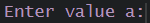

- URL shortener
- email generator [considering name, surname, age]
- dice simulator
- leap year estimator
Reminder
During the last lesson you were familiarized with the concept of functions. Feel free to use provided lists of suggested functions or to create your own, as your own dictionary making your work easier!
Creating our own functions is crucial while speaking of programs, automated portions of code. Purpose of such might be very different, such as analyzing data organized in an appropriate way (understandable for our function), generating text, like employee login or email, finding mistakes in strings, setting an automated email, creating games, assisting scientists in their research by calculating different descriptors etc.
Today, we’ll discuss for/while/if/else statements, function creation and show you some examples of programs to boost your creativity!
In the end, you will be asked to create your own programs, in order to practice a bit!
Look at the code snippet below.
The function print() will print you the information in parenthesis to
the console.
Can you predict the output?
What if you wanted to check the if statement more than once, we’d
have to change the value of a and b every time before we activate the
code again.
# function_name <- function(here you specify whether the function has arguments it needs to work, like specifying a number of times a function runs, or a set the function should use)
my_function <- function() {
# here you'd write instructions for what would your function do
# it can be automating mathematical operations, like printing the mean of a given set and further presenting minimum, maximum of the set etc.
}
So consider that if you put any of the following statements, they can
be automatized in a function, which small programs will exemplify you
more.
You can add a function, which means now you’d only have to write function(a,b) to get the result.
is_a_bigger <- function(a,b) {
if (a < b) {
print("b is greater than a ")
} else {
print("a is greater than b ")
}
}
is_a_bigger(a,b)
is_a_bigger(5,10)
is_a_bigger(10,5)
We can avoid having to write anything else than the value of a and b
- by adding small elements to our code in order to allow us to see the
prompt automatically coming back, asking to  and further -  and print us which value is greater
than the other. You can see however that instead if print() function
now, I used cat() in order to print both the string and the values
attributed both to a and b.
and print us which value is greater
than the other. You can see however that instead if print() function
now, I used cat() in order to print both the string and the values
attributed both to a and b.
You can also see a ‘while’ (TRUE) which in this particular situation
means the console will ask you to provide ‘a’ and ‘b’ all the time, in
an infinite loop, not stopping until you click Esc.
is_a_bigger <- function(a,b) {
if (a < b) {
cat("b (equal to ", b, ")", " is greater than a (equal to ", a, ")")
} else {
cat("a (equal to ", a, ")", " is greater than b (equal to ", b, ")")
}
}
while (TRUE){
a <- as.numeric(readline("Enter value a:"))
b <- as.numeric(readline("Enter value b:"))
is_a_bigger(a,b)
}
A good representation of if/else statements inside of a program is defining whether a given pH value is acidic, neutral or basic. This has its simple rules, which we can write as:
We can implement these rules in our code!
You can see that in the next code snippet. Examine the lines and try to understand each of them. Focus on how the conditions are written. Which types of operators are used here?
while (TRUE) {
pH <- readline(prompt = "Enter pH value: ")
pH <- as.numeric(pH)
# Check if pH is greater than 7, less than 7 or equal to 7 and give conditions
if (is.numeric(pH) && !is.na(pH)) {
if (pH > 14) {
print("pH can only have a value between 0 and 14. Please enter the value fitting such profile.")
} else if (pH < 7 && pH >= 0) {
print("Your pH is acidic")
} else if (pH > 7 && pH <= 14) {
print("Your pH is basic")
} else if (pH==7) {
print("Your pH is neutral")
}
} else {
print("Invalid input. Please enter a numeric value for pH.")
}
}
This program doesn’t have a difficult task. Any chemist or bright
highschooler can tell you whether a given pH value is acidic or
basic.
However, such program can be useful if we have a table of data, where
we have a certain biological effect occurring with severity dependent on
the pH value. Then we could use our script to create an additional
column stating whether the pH is acidic or not.
Such applicability might be identifying cancer cells - given that they happen to keep a more acidic pH in the extracellular matrix than healthy cells. Hence, if we had fragments of cancerous and healthy tissues, we could use a program estimating whether the pH we measured is acidic or not, as it will help us identify which tissues might be cancerous!
What if we wanted our program to stop working while encountering a specific value?
While we work, there are some situations which would make us stop. It
might be our boss telling us it’s the end of the day or a stomach ache,
reminding you it’s time for lunch.
In the same manner you can break the ‘while (TRUE)’ loop, in order to
stop receiving a prompt in the console, asking us to provide a given
value. We can do that with ‘break’.
Let’s now consider another program running in the console. Copy the
code to RStudio and check the output.
random_number <- 7
x <- 1
while (TRUE) {
x <- readline(prompt = "Enter a number:")
x <- as.integer(x)
if (x != random_number) {
print("Wrong number, try again.")
}
else if (x == random_number) {
print("Bravo!")
break
}
}
This program allows you to guess a number you stated before
activating the while (TRUE) loop. However, if the input number is equal
to the random number we want to guess, the program will stop, right
after printing “Bravo!”.
Hence ‘break’ allows you to stop the infinite loop after you guess
correctly!
Now, just for fun, check out the next code:
while (TRUE) {
x <- 1
random_number <- floor(runif(1, min=1, max = 99))
x <- readline(prompt = "Enter a number from 1 to 99:")
x <- as.integer(x)
if (x != random_number) {
cat("Wrong number, it was", random_number, ", try again.")
}
else if (x == random_number) {
print("Bravo!")
break
}
}
Here you can see that random_number is not strictly defined before the program runs. Instead, we run ‘floor()’ and ‘runif()’ in order to generate a number each time we try to guess! You can try to run the program yourself and see whether you are lucky to guess at a glance!
Another interesting R program is the password generator. Analyze the code below to understand how such generator works. You can activate the code in RStudio if you want to try it out!
# we put everything in while TRUE in order to keep the console asking us for the prompt
while (TRUE) {
# now we set the function to generate passwords. We define that the only variable the function needs is the length of the password
generate_password <- function(desired_password_length) {
# we define the set of elements acceptable inside our password
elements <- c("a", "b", "c", "d", "e", "f", "g", "h", "i", "j", "k", "l",
"m", "n", "o", "p", "q", "r", "s", "t", "u", "v", "w", "x",
"y", "z", "0", "1", "2", "3", "4", "5", "6", "7", "8", "9")
# we create an empty variable that the function will fill
# and we treat that password as a string (character class)
password <- ""
# now we state that until we reach the desired length of the password,
# the function should generate each and every element
# so this means "while the length is not final yet, keep generating elements"
while (nchar(password) < desired_password_length) {
# elements generation with 'sample' and updating the variable each time the loop is performed
# you can see that sample uses elements variable in order to generate passwords
# sep means separating element. Here we set it blankm, as we don't want any delimiters
# between the letters
password <- paste(password, sample(elements, 1), sep = "")
}
return(password)
}
# here, we closed all {} parenthesis BESIDES 'while(TRUE)'
# this means we closed of alll instructions besides
# the one that keeps the prompt active
# start the counter so that the function knows
# how many passwords it generated
count <- 0
# ask prompt about the length of the desired password:
password_length <- as.integer(readline("Desired password length: "))
# check whether provided number is a natural number, is it even stated is it NA? is it Not Available Data?
if (is.na(password_length) || password_length <= 0) {
cat("You have to provide a number higher than 0.\n")
} else {
# ask prompt about the no. passwords to generate
no_passwords <- as.integer(readline("Desired number of generated passwords: "))
# is the provided value bigger than 0?
if (is.na(no_passwords) || no_passwords <= 0) {
cat("You have to provide a number higher than 0.\n")
} else {
# state that the function should run until it has enough passwords
# if after generating the next password the count is still lower than
# desired number of passwords, the no. count should be updated
# and the program should run until it provided enough passwords
while (count < no_passwords) {
count <- count + 1
# execute the password creation
password <- generate_password(password_length)
# show created passwords in the console, with their respective indices
cat("Passwords", count, ":", password, "\n")
}
# Show the count
cat("The function run count:", count, "\n")
}
}
}
You saw that functions can rely on variables and their content during
their work. It means the function can also be a dictionary for
you!
You could create a program that would provide you a definition to a
given word, like translate program allowing you to learn languages
faster or… a program that prints you the mass of a single element in
Mendeleyev’s Table!
No more do you have to check the Table again!
# Define a list of atomic masses from the Mendeleyev's Table
atomic_mass <- c("H"= 1.0079, "He"= 4.0026, "Li"= 6.941, "Be"= 9.0122,"B"= 10.811, "C"= 12.011, "N"= 14.007, "O"= 15.999, "F"= 18.998, "Ne"= 20.180, "Na"= 22.990, "Mg"= 24.305, "Al"= 26.982, "Si"= 28.086, "P"= 30.974, "S"= 32.065, "Cl"= 35.453, "Ar"= 39.948, "K"= 39.098, "Ca"= 40.078, "Sc"= 44.956, "Ti"= 47.867, "V"= 50.942, "Cr"= 51.996, "Mn"= 54.938, "Fe"= 55.845, "Co"= 58.933, "Ni"= 58.693, "Cu"= 63.546, "Zn"= 65.39, "Ga"= 69.723, "Ge"= 72.61, "As"= 74.922, "Se"=78.96, "Br"= 79.904, "Kr"= 83.80, "Rb"= 85.468, "Sr"= 87.62, "Y"= 88.906, "Zr"= 91.224, "Nb"= 92.906, "Mo"= 95.94, "Tc"= 97.61, "Ru"= 101.07, "Rh"= 102.91, "Pd"= 106.42, "Ag"= 107.87, "Cd"= 112.41, "In"= 114.82, "Sn"= 118.71, "Sb"= 121.76, "Te"= 127.60, "I"= 126.90, "Xe"= 131.29, "Cs"= 132.91, "Ba"= 137.33, "La"= 138.91, "Ce"= 140.12, "Pr"= 140.91, "Nd"= 144.24, "Pm"= 145.0, "Sm"= 150.36, "Eu"= 151.96, "Gd"= 157.25, "Tb"= 158.93, "Dy"= 162.50, "Ho"= 164.93, "Er"= 167.26, "Tm"= 168.93, "Yb"= 173.04, "Lu"= 174.97, "Hf"= 178.49, "Ta"= 180.95, "W"= 183.84, "Re"= 186.21, "Os"= 190.23, "Ir"= 192.22, "Pt"= 196.08, "Au"= 196.08, "Hg"= 200.59, "Tl"= 204.38, "Pb"= 207.2, "Bi"= 208.98, "Po"= 209.0, "At"= 210.0, "Rn"= 222.0, "Fr"= 223.0, "Ra"= 226.0, "Ac"= 227.0, "Th"= 232.04, "Pa"= 231.04, "U"= 238.03, "Np"= 237.0, "Pu"= 244.0, "Am"= 243.0, "Cm"= 247.0, "Bk"= 247.0, "Cf"= 251.0, "Es"= 252.0, "Fm"= 257.0, "Md"= 258.0, "No"= 259.0, "Lr"= 262.0, "Rf"= 261.0, "Db"= 262.0,"Sg"= 266.0, "Bh"= 264.0, "Hs"= 269.0, "Mt"= 268.0)
while (TRUE) {
# Read input atomic symbol
atomic_symbol <- readline(prompt = "Enter the atomic symbol: ")
# Calculate the mass based on the atomic symbol
# if the provided atomic symbol is inside atomic_mass vector then:
# mass should be updated with the mass attributed to the atomic symbol prompted
# and info should be printed to the console
if (atomic_symbol %in% names(atomic_mass)) {
mass <- atomic_mass[[atomic_symbol]]
print(paste("The mass of 1 mole of", atomic_symbol, "is", mass, "g."))
} else {
print(paste("Error: Invalid atomic symbol."))
}
}
Next program is going to seem a little more complicated, but it will
also allow us to get the mass of MOLECULES instead of atoms.
To do that, we have to consider explaining to out computer that: *
numbers to the right of element name is the no. atoms of this element *
everything inside parentheses should be multiplied by the first number
to the right after the parenthesis closes * the molecular formula should
be read like a pattern so we need regular expressions
atomic_mass <- c("H"= 1.0079, "He"= 4.0026, "Li"= 6.941, "Be"= 9.0122,"B"= 10.811, "C"= 12.011, "N"= 14.007, "O"= 15.999, "F"= 18.998, "Ne"= 20.180, "Na"= 22.990, "Mg"= 24.305, "Al"= 26.982, "Si"= 28.086, "P"= 30.974, "S"= 32.065, "Cl"= 35.453, "Ar"= 39.948, "K"= 39.098, "Ca"= 40.078, "Sc"= 44.956, "Ti"= 47.867, "V"= 50.942, "Cr"= 51.996, "Mn"= 54.938, "Fe"= 55.845, "Co"= 58.933, "Ni"= 58.693, "Cu"= 63.546, "Zn"= 65.39, "Ga"= 69.723, "Ge"= 72.61, "As"= 74.922, "Se"=78.96, "Br"= 79.904, "Kr"= 83.80, "Rb"= 85.468, "Sr"= 87.62, "Y"= 88.906, "Zr"= 91.224, "Nb"= 92.906, "Mo"= 95.94, "Tc"= 97.61, "Ru"= 101.07, "Rh"= 102.91, "Pd"= 106.42, "Ag"= 107.87, "Cd"= 112.41, "In"= 114.82, "Sn"= 118.71, "Sb"= 121.76, "Te"= 127.60, "I"= 126.90, "Xe"= 131.29, "Cs"= 132.91, "Ba"= 137.33, "La"= 138.91, "Ce"= 140.12, "Pr"= 140.91, "Nd"= 144.24, "Pm"= 145.0, "Sm"= 150.36, "Eu"= 151.96, "Gd"= 157.25, "Tb"= 158.93, "Dy"= 162.50, "Ho"= 164.93, "Er"= 167.26, "Tm"= 168.93, "Yb"= 173.04, "Lu"= 174.97, "Hf"= 178.49, "Ta"= 180.95, "W"= 183.84, "Re"= 186.21, "Os"= 190.23, "Ir"= 192.22, "Pt"= 196.08, "Au"= 196.08, "Hg"= 200.59, "Tl"= 204.38, "Pb"= 207.2, "Bi"= 208.98, "Po"= 209.0, "At"= 210.0, "Rn"= 222.0, "Fr"= 223.0, "Ra"= 226.0, "Ac"= 227.0, "Th"= 232.04, "Pa"= 231.04, "U"= 238.03, "Np"= 237.0, "Pu"= 244.0, "Am"= 243.0, "Cm"= 247.0, "Bk"= 247.0, "Cf"= 251.0, "Es"= 252.0, "Fm"= 257.0, "Md"= 258.0, "No"= 259.0, "Lr"= 262.0, "Rf"= 261.0, "Db"= 262.0,"Sg"= 266.0, "Bh"= 264.0, "Hs"= 269.0, "Mt"= 268.0)
# first, we have to define a function, which will be an element of a later 'parse' function
# this function would seek the closing parenthesis ')'
find_closing_paren <- function(tokens) {
#whenever this function starts, so does the counter (this helps the function assess when to stop)
count <- 0
# now we have to define that we should seek the ')' in the sequence provided from the variable 'tokens'
for (index in seq_along(tokens)) {
tok <- tokens[index] # indexes inside 'tokens' should be defined as 'tok' for simplicity
if (tok == ")") {
count <- count - 1 # now reduce the counter to show the function it should stop working
if (count == 0) { # so now, if the count is 0 the function can finish. If not, it means, that was a set of parenthesis inside of another parenthesis, like C(C(CO)2)2
return(index) # now to finish, show found indexes inside parenthesis | (OH)2 => index = OH
} # else, if there's a new parenthesis open, understand it as a different one and seek another closing
} else if (tok == "(") {
count <- count + 1
}
}
NA
}
parse <- function(tokens, stack, atomic_mass) {
if (length(tokens) == 0) {
return(sum(stack)) # if there are no tokens to parse, meaning if we take a blank input
}
tok <- tokens[1] # now we go to divide tokens into fragments
if (tok == "(") {
end <- find_closing_paren(tokens) # whenever you find an open parenthesis, function should seek its end
# if the end is found, next the tokens should be called, from the 2nd element (first chemical inside parenthesis. First element is = '('))
if (!is.na(end)) {
sub_tokens <- tokens[2:(end - 1)] # atoms should be received until the last one (-1 because ')' is that last element
sub_mass <- parse(sub_tokens, numeric(0), atomic_mass) # take what you selected in the last line and now parse those found elements into numbers, taken from the atomic_mass vector
stack <- c(stack, sub_mass) # stack should be updated by the mass we obtained in sub_mass
return(parse(tokens[(end + 1):length(tokens)], stack, atomic_mass))
} # else checks if the variable tok contains a string that consists only of digits (so if we have single chemical elements)
} else if (grepl("^\\d+$", tok)) {
stack[length(stack)] <- stack[length(stack)] * as.numeric(tok)
} else {
stack <- c(stack, atomic_mass[[tok]])
}
return(parse(tokens[-1], stack, atomic_mass))
}
while (TRUE) {
formula <- readline(prompt = "Enter molecular formula: ")
# our input formula will now be tokenized : changed into subscripts, which the computer will have to understand
# we provide the regular expression in order to specify the pattern the computer should seek inside input
# if the function regmatches() finds any other element - it won't be recognized
tokens <- regmatches(formula, gregexpr("[A-Z][a-z]*|\\d+|\\(|\\)", formula))[[1]]
cat("The molecular mass of", formula, "is", round(parse(tokens, numeric(0), atomic_mass), 3), "\n\n")
}
# function gregexp holds a regular expression like a string
# and expects big letters first, then eventually lower case letters as well
Inspect the last code snippet in detail. Read each comment and try to think of other examples in which you could use such statements.
Now, after inspecting several small programs, you’re ready to get
creative!
Pick one program to prepare out of each collapsible card of Level 1,
2 and 3 (3 programs total). Prepare the scripts in a new project,
comment your code to show its purpose and make the program run in the
console all the time (use while (TRUE) loop).
If you’d rather only do two programs - simply choose one from the Level
4 and then pick any from the other levels as the 2nd one.
YOU CAN SUGGEST your idea of a program to create during classes to
your teacher (Klaudia Chmielewska). The difficulty of the
chosen program will define how many less programs from the collapsible
buttons you have to prepare.
Finished programs should be sent in a zip file to klaudia.chmielewska@ug.edu.pl
If you have any difficulties after class, feel free to send an email there or to step by during my office hours in G320.
See you in the next lesson!